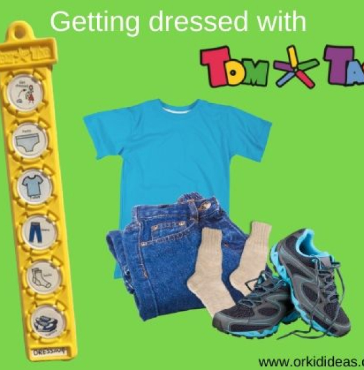
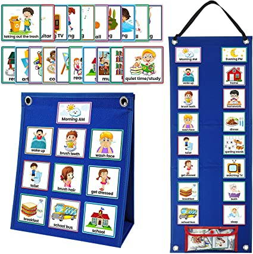

Fundementals of support
Supporting your child in developing the necessary life skills to navigate their daily routine smoothly requires time. It's natural to feel frustrated and doubtful during this process, but it's important to be aware of the support provided by charities that can listen to you and guide you towards the assistance you might need to overcome challenging days. When considering the four fundamental areas, we concentrate on aspects that can be difficult to establish a routine for, particularly for children on the autism spectrum. Throughout this page, you will find recommendations and initiatives accompanied by real-life experiences related to each area.
Please refrain from attempting anything if you're uncertain about its suitability for your child. Just because a certain approach works for someone else's child doesn't guarantee its success for your own. However, you can certainly learn from the experiences of others and adapt them into your child's routine if you feel comfortable doing so. Always consult your doctor for advice before implementing any changes that may contradict a health plan or seek reassurance regarding the proposed modifications.
Getting dressed
Mastering the process of getting dressed is an essential aspect of daily life and a crucial life competency. Achieving success in this area relies on establishing a routine and maintaining consistency. While not all children with autism possess the ability to dress themselves, as a parent, you possess the knowledge to determine the appropriate time to support your child in acquiring this skill. Teaching my autistic son how to dress required significant amounts of time, practice, and patience. The process of donning clothes in the correct order, fastening buttons and zippers, and tying shoelaces encompasses the mastery of numerous abilities. When sensory triggers are added to the equation, it becomes evident why it took him longer to develop dressing skills compared to his peers of the same age. Nevertheless, the endeavor is well worth it. The ability to dress independently instills confidence in autistic children, enabling them to function autonomously at school, and alleviates one less concern for you during the mornings!
Tom Tag is an exceptional online platform that provides a tangible visual aid for your child to assist them in following straightforward instructions for various tasks they need to complete. For more information, please access the aforementioned website.
Real Life Expirience
My son has always had issues with getting dressed he hated the feel of clothes, im not sure if its his willpower or lack of understanding. He is 7 years old with a speach delay however, can be very independent at times if needing food or a drink he knows where to get it from and how (we do have safe areas for food and drink). When teaching my son to get dressed it was not a quick endeavor and took time and patients something I do not find easy myself.
So my technique was to start off small, I decided to try to get my son to just put on his socks whilst I got everything else on him. To start with he would not listen to me and it was as if the sock did not exist, just getting him involved in the sock was the answer. I would start off by tickling him with the sock which peaked his intrest very fast and eventually started to focus more time on the sock, touching it and putting it on his hand as a glove. Now that I have him engaged with the sock I ventured to the realms of putting the sock on his foot again I made this a game, I would chase him and catch and tickle him while pretentding the sock was eating his feet and slowly placed the sock on his foot.
After the socks started to become easier to put on him I moved over to the trousers and followed the same technique by acting like the trousers wanted to eat both of us again he found this hilarious and gradually this started to become second nature to him. Going forward to today I still sometimes have to use the tickle clothes but this always seems to work for me. This is my expirience and something that worked for us.
Suzanne - Newcastle
Going to school
School can be an overwhelming experience for children with Autism. Transitioning from their familiar environment to a shared space can be challenging for them. If your child shows reluctance to go to school, it's crucial to address it early on. Here are some strategies you can try at home:
Encourage open communication with your child about the issue. Visual supports can be helpful. Ask your child to rate events or places at school on a scale from "not scary" to "very scary." This can help you identify when and where the problems occur and build your child's resilience.
If you understand the reasons behind their reluctance, communicate them to the school staff.
Create a "worry book" for your child to document their anxieties during the school day.
If appropriate, read the book together as part of their evening routine. This allows you to help them address any worries and suggest coping strategies for the future.
Explore strategies to regulate, reduce, and monitor emotions and stress, such as incorporating exercise or using visual stress scales like a stress thermometer or traffic light system.
Recognize and praise any progress your child makes on specific tasks, such as completing challenging assignments, wearing their school uniform, or walking past the school.
Establish structure at home by using visual supports.
Assist your child in developing their social skills.
Help them understand the benefits of education and its importance.
By implementing these strategies, you can support your child in navigating the challenges of school and promote their overall well-being.
For more detail into these strategies please visit: Autism.Org

Real Life Expirience
School was always a challenge for my daughter, her schools lack of communication could really effect her. Now my daughter is on the spectrum but still able to be in a mainstream school with support. The school she was at always had the best intentions for her however, I believe their lack of understanding of her needs not matter how many times I told them was the biggest issue. There was times when I felt the need to keep my daughter off school when a big change was happening examples of this is a visit of career avisors and additional assemblys that were penciled in with only a days notice. When things like this happened my daughters anxiety would go into overdrive she would panic about the unkown, what if being public enemy number 1.
When she was younger the questions werent asked and she would just go into meltdown and be unconsolable, understanding what was wrong at times could be an impossible task.
What I did to support my daughter was to plan out her days ensuring she was well aware of what was going on and stuck PEC cards to her wall so she had a constant reminders of her routine. I created my own PEC cards to cater to school and other areas. PEC cards are mainly used for communication but helped me massivley as a visual aide that I could arrange on a daily basis. I also spent time with the school and gave more detail regarding her traits at home and support techniques I provided her.
The school adopted the same strategies and promised to keep me in the loop with planning and time tables as much as possible. We still have bad days but PEC cards have helped massivley and I recommend them to anyone who is having the same issues as me.
Cassie - Gateshead
Picture Exchange Communication System (PECS)
Using PEC cards are a great way to help with supporting a childs routine and with communication. PEC are easy to make but if you would like to purchase one we found a range of different packs and strategies on Amazon
Sleep
Sleeping can be a delicate process for a child with Autism. Each child is unique, and sleep patterns are no exception. Various factors, such as the environment, difficulty relaxing, melatonin imbalances, and more, can impact the sleep of an Autistic child. Finding a solution to improve sleep can often be a challenging and frustrating endeavor. Sleep deprivation not only affects the mood and energy levels of the child but also has an impact on everyone in the household. From being repeatedly awakened during the night to managing the mood swings of the Autistic child, the effects of inadequate sleep can be felt by the entire family. Many parents face challenges in this area when it comes to children with Autism. It is believed that children with Autism produce less melatonin, a natural chemical that helps regulate sleep. In some cases, medication may be recommended by your doctor to provide a synthetic version of melatonin and help your child achieve restful sleep. If medication is not a viable option, keeping a sleep diary can assist health professionals in identifying any underlying factors or root causes contributing to your child's sleep difficulties

Real Life Expirience
My Son has always found sleeping difficult he is non-verbal Autistic and a very delicate sleeper, if woken up through the night he will not go back to sleep and will stay awake until the next night. This makes night time routine critical and everyone in my household is a part of it. I have another child who is a teenager and having a toilet downstairs has been a godsend especially when he has his friends over to stay, I make sure upstairs if off limits and ensure they sleep down stairs.
As much as my preparation and rules help my son still commonly wakes up through the night normally about 2AM which means myself or my partener must get up aswell. This can make life very difficult especially when you have to go to work the next day and you are not guarenteed a full night sleep the next night. I know this is not what everyone will do or agree with but after seeing my son's paediatrician we decided to try him on Circadin which is a synthetic melatonin used when a child who is not creating enough for a full nights sleep.
So areas of the medication that is negative, my son can be a bit more lathargic at times during the day and his toilet routines is a lot more frequent than it used to be.
The pros are my son has been sleeping right through the night and I get a much happier child the next day and my family are able to get their well needed rest also. This is my sons experience on the medication it is not everyones goto solution I understand that but I wanted give you all my families experience.
Francis - Newcastle
Eating
Incorporate structure and routine into mealtimes. Children with autism benefit from a predictable eating schedule, including three regular meals and two snacks each day. While water can be offered between meals, it's important to limit other foods and drinks outside of the scheduled eating times. Continue to introduce less-preferred foods during meals. Removing these foods entirely prevents your child from having the opportunity to try new foods. Instead, consider including small amounts of new or nonpreferred foods, like a single green pea or half of a grape, on a separate plate. By offering smaller portions, you increase the likelihood of your child trying the food. If your child is still experiencing feeding difficulties, you can find more information about our Feeding Program. By following these tips, you can create a structured environment that encourages your child to explore new foods and expand their dietary choices. For additional resources and support, please visit

Real Life Expirience
My son would not use a spoon to eat at this point he was nearly 4 and I was still feeding him we had tried everything but each time the result would be the same a huge meltdown. My son would not touch the spoon at all it was as if he had got in his head that something would happen and this was the same for all utensils.We had tried reward systems and encouraging him to feed me with the spoon but nothing. This went on and on until my partner had an idea and it was something so simple that worked for us we decorated a couple of spoons and forks to look like toys and my patner and I began to play with them pretending they were actually toys. I was very sceptical that this would work but I thought we have tried everything else so why not anyway as we were playing I noticed my son becoming more and more interested to the point he took the spoon right out of my hand to play the game I couldnt believe it. We played for about 15 minutes before I brought out his favourite yohurt it was a long shot but worth a try,
we created the game of filling up another yohurt pot he loved doing it and was using the spoon. I could also see he wanted to eat the yoghurt I kept getting that side eye look as if saying feed me then, which I did not then completley to my surprise he licked the spoon I was in shock. I am not going to tell you that all my troubles with eating were gone after this moment but it was definetly a step in the right direction. It took a few weeks with playing our game and getting used to the utensils before he took to them. He always uses them now and I cant remember when I last had to feed him.
Losana -Durham